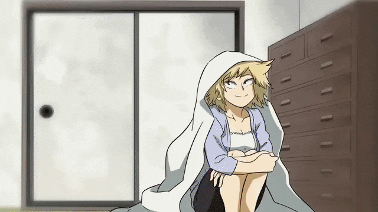

SINOPSIS
Los súperpoderes forman parte de cada personaje presente en la historia de Boku no Hero Academia, entre los cuales se clasifican en héroes, para defender la nación de todos los ataques auspiciados por el mal y los villanos, quienes buscan el objetivo opuesto de dichos héroes. No obstante, no todos los ciudadanos podían contar con súperpoderes, ya que Midoriya Izuku soñaba con algún día tenerlos, para ser el mejor de los héroes. Si te interesa conocer otras historias que no abarcan los mangas ni animes, entonces puedes recurrir a Los Vengadores para que logres conocer su argumento, películas y todos sus personajes. Uno de los grandes deseos de Izuku es conocer a un legendario héroe llamado All Might, egrsado con honores de la U.A (una academia capacitada para instruir a poderosos héroes que puedan ser capaces de defender al mundo de toda maldad y peligro). Un buen día, Izuku realiza su mayor sueño de conocer a su ídolo hasta el punto de emocionarse. All, al ver la buena disposición de Midoriya, le promete que le facultará de superpoderes para ser un héroe más. De igual modo, no te puedes perder por nada del mundo la tercera parte de la vida y obra del Hombre Araña mediante Spider Man 3. All Might ayuda a Izuku para que pueda estudiar en la misma Academia donde se preparó, en la U.A. Una vez allí, Izuku puede conocer sus nuevos poderes en Boku no Hero Academia. Eso sí, el protagonista debe cuidarse las espaldas a lo largo de la historia, ya que los enemigos poco a poco irán en aumento por el sentimiento de la envidia que provoca sus asombrosos poderes. Entre otros personajes poderosos que se han ganado su lugar como los más legendarios, están los X-Men, que vale la pena conocer todo lo que no sabías sobre ellos.
